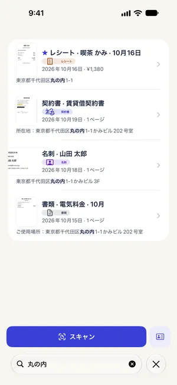

名刺をスキャンしてiPhoneの連絡先に登録する方法
最終更新 2026-10-22
名刺は財布にしまうと、いざ連絡するときに見つかりません。Paperkeepで名刺をスキャンすると種類が「名刺」になり、読み取った内容で入力済みの新規連絡先画面を開けます。最後の確認と保存は自分の手で行い、この機能に料金はかかりません。
まずは iOS の標準機能でやる方法
- 「連絡先」Appで「＋」をタップし、名刺を見ながら名前と番号を手入力するのが基本の方法です。
- 対応するiPhoneなら、カメラを名刺に向けて画面の電話番号やメールを長押しすると、連絡先に追加するメニューが出ることもあります。
- ただし項目を1つずつ扱うことになり、名刺の画像そのものは残りません。
Paperkeep でやる方法
- 「スキャン」をタップし、名刺を画面の中央に置いて撮影します。両面名刺なら裏面も続けて撮り、「保存」をタップします。
- 「新規スキャン」画面では「写真」フィルタがロゴや色を生かします。仕上がりに問題がなければ「保存」へ。
- 名刺の書類を開くと種類が「名刺」と表示され、「連絡先に追加」ボタンが出ます。別の種類に分類されていたら、「種類」で「名刺」を選ぶとボタンが現れます。
- 「連絡先に追加」をタップすると、名前・会社・役職・電話番号・メールなどが入った新規連絡先の画面が開きます。間違いを直して「完了」で保存します。

この書類ならではのコツ
- 名刺は小さいので、暗い色のテーブルに置くと端を検出しやすくなります。白い机に白い名刺だと切れやすいです。
- 縦書きやデザイン性の高い名刺は、名前が別の欄に入ることがあるので、保存前に欄ごとに確認しましょう。
- スキャンした名刺の画像はPaperkeepの「スマートフォルダ」→「名刺」に残るので、裏に書いた手書きのメモもあとで見返せます。
まもなく App Store で公開します。